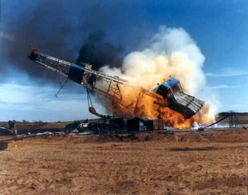

< < < Back
How The Bakken Oil Fields Put Me On The Path To Truth – Return Of Kings
I’m writing this on my 24th birthday. Not that it makes a difference one way or the other, but it gives me a superficial reason to reflect on what has happened during the last few years. The truth is, Return of Kings has saved my life and now I would like to give something back to it. So buckle up, in as few words as possible, I’m going to tell you my story.
It’s 2009 and I’ve just graduated from high school. I wasted no time dumping my current girlfriend for the prospect of greener pussy pastures upon entering university. Like most 19 year olds I had no idea what the fuck was going on. I only went to school because I had absolutely no direction, and hey, my rents were footing the bill so why the fuck not? Well it may come as a shocker to you but school wasn’t exactly my cup of tea. I didn’t learn a thing that year except how to snort lines. I read Neil Strauss’s book The Game and had sex with a grand total of two women (impressive right?). So after bombing two straight semesters it was time to explore other options. I liked money, and I knew of a magical land where I could go get some of my very own.
Enter The Bakken
I’m living proof that all of the horror stories you hear about the oil patch are 100% true. Long driving, hard drinking, bar fighting, and burly-ass men. They have an endearing pet name for the FNGs that come on the rigs: worm. For five months I was a fucking worm. If you don’t have the sack to look your coworkers in the eye to disagree with them, and if they deserve it, punch them in the face. That’s how they will treat you. Like a worm. In those first few months, I undoubtedly improved at my job, but not a scrap of respect was thrown my way. Until one fateful night in the dead of winter.
We were tripping pipe. For one of the first times I was keeping up with my asshole driller who had, just HAD, to prove that he was the fastest driller in the whole patch. His deep-seated insecurities in his own life allowed him to rationalize using an illegal drilling technique that puts undue stress on the cables. I could tell it was coming about two seconds before it did. This allowed me to move my head back about four inches, which probably saved my life.

I don’t wanna get too technical for the guys out there who honestly don’t give a shit about the minute details of the extractive industry. Besides it all went down so fast that nobody can say with 100% certainty what actually happened. Lets just say a cable snapped. Something hit me in the right temple harder than I had ever been hit before in my life. I didn’t go unconscious. I didn’t fall down. I stood there hearing the loudest sound imaginable. WOWOWOWOWOHWOHWOHWOH!!!! My bell had been rung. Hard.
Another hand had also been hit. He was lying prone and not moving. The others ran to pick him up, but I had enough sense, even in my condition to shout “Don’t move him! His neck could be broken.” It turns out when you have blood squirting 2 feet from your forehead and running down your face people tend to listen to you. The paramedics arrived and gave us a by-the-book treatment. They had us taken to a hospital a little over 200 miles away. Long story short; the other guy had a concussion and I was diagnosed with a depressed temporal skull fracture. I now have a 2 inch wide 4 inch long titanium plate in my head, covering a hole the size of a silver dollar.
After a month of recuperation I was back at it. One day I was pulling out sutures, the next I was throwing tongs. My job performance had never been better, but I became pissed. Being pissed was exactly what was needed for me to excel at that dirty job. When someone crossed me, I brought the rage. Pretty soon, nobody was crossing me anymore. I actually started to like my co-workers (all the more easy because the fucker that broke my head had the dignity to fire himself). I started to love digging holes. You form bonds with your crew that are deeper than typical friendships. Its brotherhood.
Things were going my way. I was rich (at least for a 21 year old), strong, and mean as shit. I had 2 weeks and 5 thousand dollars to blow every month. If I wanted it, I bought it. Party. I drank, did drugs, gambled, and got poon. But I never fucked my roommate. No, no, no. This one was special. We’ve all heard the oneitis stories so I’ll just leave you with a fifty foot pedestal and boyfriend goggles. It was all good because I was getting laid elsewhere. But she was always in the back of my mind while I was trudging through slop and reeking of diesel.
The Devaluation Process
Well one day she had had enough of my craziness and moved out. Fine. Whatever. I kept doing my thing, but started slowing down on my consumption. She had the gall to come around and insist that I pay her back rent for the month she decided to hike up her skirt and march away with her nose in the air. I told her she could either kick rocks, or find out what small claims court is really all about. During this slowdown my regular fuck buddy had finally had enough and propositioned me for an exclusive relationship. Considering she was engaged the entire time she was fucking me I said no.
So now I was hoeless. My buddies started growing up and doing their own thing and were busy. My dependency on booze and drugs was starting to show. I entered a dry spell. A really long one. As the months rolled by my relationships started to decay to the point where I moved back to my family ranch. I was seriously depressed and dependent. One day, when I couldn’t stand the thought of another two weeks, I quit. Feeding cows was alright at first, but pretty soon my money ran out. I was more broke than Humpty-Dumpty. I still carried all the addictions that I developed in the past. To make matters worse, I had no ladies. None. I started having dreams about my oneitis and going through my work in a haze constantly rehashing the past.
One fine day a friend invited me camping. I was ready to get fucked up and drink some free shit so I said yes. Well when I arrived there was trouble on sugar mountain. We’ll call her Cali. I had taken Cali home in a drunken stupor last St. Patty’s day, raw dogged her, and blew a load on her stomach. That’s all good, but the problem is she is at least a full 2 points lower than me. Kinda fat. Kinda bitchy. Things started out well until the ole LSD got brought around. Once I was good and tripping balls, the sharks came after me.

LSD makes a mind open to different ways of thinking and takes off the filter in conversation. You say genuine things that you mean. So I said something to my buddy, Jake, that I didn’t consider gay. But he, for some reason, interpreted it as faggoty. He ran off isolating me and had a brief chat with Cali. She came in with an agenda. All her innuendos and retarded logic fell on deaf annoyed ears until she brought up my oneitis. This was the death blow she had been looking for. Attaching such a simple self depreciating idea to one that was so deep within my mind already.
It fucked me up. When I went back to school I couldn’t enjoy all the new freshman beaver running around. I was too busy having nightmares about my oneitis laughing at me. The inner dialogue was relentless.
Other Me: “So why the hell didn’t you ever make a move on her?”
Me: “…”
Other Me: “That’s what I thought… Faggot.”
Me: “Fuck you dude.”
Other Me: “What about your fuck buddy? There was a good girl who genuinely wanted you.”
Me: “I just wasn’t that attracted to her.”
Other Me: “Hahaha! You weren’t attracted to her?! Oh, its starting to make sense now. Maybe you’re gay.”
Me: “BLAHRRRRR! SHUT THE FUCK UP!”
Other Me: “Not until you admit you are a worthless nancy boy!”
All day I was having conversations with myself, degrading myself, wondering incessantly about the nature of men and women. Then one day I saw a total four dudes wandering around campus in skirts dressed like women. It lead me to ask one question.
“What the fuck is going on?”
So I turned to the only one who could give me true unbiased advice on any question I had. The internet. God bless you manosphere. God bless you Rollo. After reading the entirety of Rational Male, things started to make sense. I read manosphere blogs for weeks, leading me to realize that I was suffering from self hate. That’s all it was, and just like that, it was gone. I finally had an answer to all the fucked up questions in my mind.
The 5 Truths That Set Me Free
1. I never made a move on my oneitis because I was following a traditional bullshit script to try and seduce her. Pedestalizing her and paying for all her shit. Acting like a hopeless beta.
2. I never entered into an LTR with my fuckbuddy because she opened her legs for me on the first date and never made me work for it. Not to mention she was a cheater from the word go.
3. Jack wanted to bang Cali. His jealousy fueled his sabotage against me.
4. You aren’t gay, society is gay. Think about how backwards it is to live in a world where the simple denial of “I’m not gay” and incriminating and worthy of scorn. What is everyone’s favorite topic of conversation? When you turn on the idiot box what is one of the first things you see?
5. My happiness used to be based on superficial things like money and substances. I realize now that my worth as a man has very little to do with my bank account or how many shots of Jack Daniels I can drink. Im sober now and building true worth and value by improving myself.
Before you go any further in the game of life, I want you to do something for me. All the helpful advice in the world on game, health, wealth, stature, and style wont be worth a turd flavored lollipop if you can’t say this one simple thing and mean it. Look yourself in the mirror and say,
“I love you. I respect you.”
Good luck.
Read Next: Red Pill Wisdom From Partrice O’Neal